Um espaço de escuta, reflexão e cuidado emocional.
Este espaço foi pensado para pessoas que desejam compreender melhor a si mesmas, seus sentimentos, relações e desafios do cotidiano.
Com uma postura ética, humana e cuidadosa, o trabalho busca ampliar a consciência emocional, favorecer o autoconhecimento e promover formas mais saudáveis de lidar com conflitos, angústias e experiências da vida.
Seja no contexto clínico, em palestras ou rodas de conversa, o objetivo é criar espaços de reflexão que aproximem a saúde emocional e o desenvolvimento humano da vida real.
Psicoterapia Individual
Um espaço de escuta e cuidado emocional voltado à compreensão dos sentimentos, conflitos e experiências que atravessam diferentes fases da vida. O processo terapêutico auxilia no enfrentamento de questões como ansiedade, depressão, luto, dificuldades nos relacionamentos, sobrecarga emocional, mudanças e sofrimento psíquico, respeitando a singularidade de cada pessoa.

Grupos Terapêuticos
Encontros em grupo, voltados à troca de experiências, escuta e acolhimento emocional. Um espaço de reflexão coletiva que favorece o compartilhamento, o pertencimento e novas formas de compreender conflitos, sentimentos e desafios presentes nas relações, nas vivências emocionais e no cotidiano de cada participante.
Palestras e Rodas de Conversa
Encontros voltados à saúde emocional, relações humanas e desenvolvimento pessoal, promovendo reflexões acessíveis sobre temas presentes no cotidiano. Espaços de diálogo e troca pensados para escolas, empresas e instituições que buscam ampliar conversas sobre saúde mental, vínculos humanos e cuidado emocional.

Projetos e Workshop
Projetos, workshops e ações voltados à promoção da saúde mental no ambiente institucional e corporativo. Iniciativas desenvolvidas para abordar temas como estresse, burnout, comunicação, relações interpessoais, saúde emocional e qualidade das relações no contexto de trabalho e das organizações.
Os atendimentos, grupos, palestras e ações desenvolvidas partem de questões emocionais e relacionais presentes no cotidiano, criando espaços de escuta, reflexão e desenvolvimento humano em diferentes contextos.
Os temas trabalhados podem incluir:
- Ansiedade e sobrecarga emocional
- Depressão e luto
- Burnout e estresse
- Relacionamentos e conflitos familiares
- Autoestima e autoconhecimento
- Comunicação e relações interpessoais
- Saúde mental no ambiente de trabalho
- Mudanças, perdas e transições de vida
Cada encontro é pensado de forma cuidadosa, considerando a singularidade das experiências, dos contextos e das necessidades envolvidas.
Deise Cerqueira
Sou Deise Cerqueira, psicóloga clínica (CRP 06/169268).
Escolhi a psicanálise porque acredito no inconsciente. É o que nos move, muitas vezes sem que a gente perceba, e trabalhar a partir disso é o que dá sentido à clínica pra mim.
Sou formada em Psicologia pela Universidade de Santo Amaro (UNISA) e pós-graduada pela Fundação Armando Alvares Penteado (FAAP). Minha formação se sustenta no tripé psicanalítico: análise pessoal há mais de 10 anos, estudos contínuos e mais de 5 anos de prática clínica com supervisão.
Ao longo da minha trajetória, trabalhei em ONG com crianças e adolescentes, dei aulas sobre autoconhecimento e comunicação não violenta, e conduzo palestras e rodas de conversa que aproximam a psicanálise do cotidiano.
No consultório, sou humana antes de ser técnica. Acredito que não existam verdades absolutas, apenas perspectivas, e que minha função é ser uma ferramenta, um instrumento no seu processo. Não se trata de conduzir sua vida por você, mas de acompanhar esse caminho com escuta, cuidado e responsabilidade, sem ocupar o lugar das suas escolhas.
Você não vai encontrar respostas prontas nem julgamentos. Vai encontrar escuta real, rigor clínico e alguém que leva o seu sofrimento a sério.
Perguntas Frequentes
Tire suas dúvidas antes de iniciar um processo de cuidado emocional.
Os atendimentos acontecem de forma online ou presencial (quando aplicável), em diferentes formatos: psicoterapia individual, grupos terapêuticos, palestras e ações institucionais.
A psicoterapia individual é um processo contínuo e aprofundado. Os grupos terapêuticos são espaços de troca e reflexão coletiva. Já as palestras e rodas de conversa são encontros sobre saúde emocional em contextos educativos e institucionais, com temas do cotidiano.
Cada formato atende a diferentes necessidades. A psicoterapia é indicada para um processo contínuo e individual; os grupos para troca e reflexão coletiva; e as palestras e ações institucionais para encontros pontuais de reflexão sobre temas específicos.
Cada formato tem sua própria proposta e pode ser iniciado independentemente de experiência prévia com terapia ou participação em grupos.
Na psicoterapia, geralmente semanal ou quinzenal. Nos grupos, palestras e ações institucionais, a frequência varia conforme a proposta.
Na psicoterapia, o tempo varia conforme cada processo e demanda. Nos demais formatos, a duração depende da proposta de cada encontro ou projeto.
Os valores e condições são informados diretamente pelo contato. O agendamento é feito pelo WhatsApp.
Todos os atendimentos seguem rigorosamente o código de ética profissional, garantindo sigilo, respeito e responsabilidade dentro dos limites de cada formato.
VAMOS CONVERSAR?

Você pode tirar dúvidas, entender como funciona o atendimento e agendar sua sessão diretamente comigo pelo WhatsApp.
Falar no WhatsApp